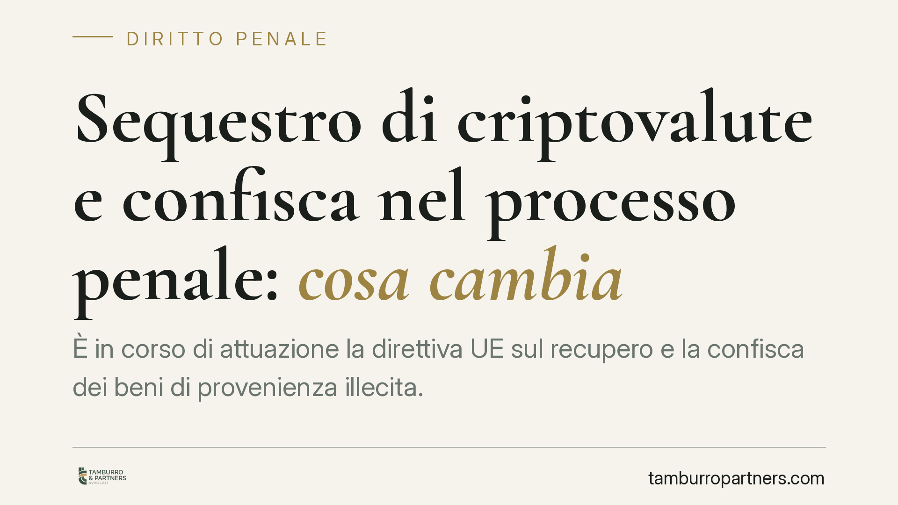

Sequestro di criptovalute e confisca nel processo penale: cosa cambia
È in corso di attuazione la direttiva UE sul recupero e la confisca dei beni di provenienza illecita. Le nuove regole rafforzano i poteri investigativi del pubblico ministero e del procuratore nazionale antimafia e incidono sul sequestro delle criptovalute. Il tema riguarda imprese, professionisti e chiunque detenga asset digitali: il momento di stima del valore diventa decisivo per la difesa.

Il quadro: una riforma in attuazione di fonte europea
La materia di sequestro e confisca dei beni nel processo penale è oggetto di un intervento di riforma in attuazione della direttiva (UE) 2024/1260 sul recupero e la confisca dei beni. L'obiettivo dichiarato dal legislatore europeo è armonizzare gli strumenti di tracciamento, congelamento e ablazione dei patrimoni di origine illecita, con particolare attenzione agli asset digitali.
Una precisazione doverosa: alla data di questo contributo i riferimenti puntuali del decreto attuativo italiano — numero, articoli novellati e data di entrata in vigore — vanno verificati sul testo pubblicato in Gazzetta Ufficiale. Su un tema delicato come questo preferiamo non indicare numerazioni che non siano confermate dalla fonte ufficiale. Quando il testo sarà definitivo, aggiorneremo l'analisi con i rimandi esatti.
Confisca diretta e confisca per equivalente: due strumenti diversi
Per orientarsi occorre tenere distinte due figure.
La confisca diretta colpisce il bene che costituisce prezzo, profitto o prodotto del reato: si aggredisce esattamente la cosa collegata all'illecito.
La confisca per equivalente interviene quando il bene originario non è più rintracciabile o aggredibile: si sottrae al condannato un valore corrispondente, prelevato da altri beni leciti nella sua disponibilità. È uno strumento di chiusura, previsto da numerose norme di settore e, in materia di reati tributari e di criminalità organizzata, ancorato a disposizioni come l'art. 240-bis c.p. (confisca in casi particolari, cosiddetta allargata). La misura cautelare che anticipa la confisca in fase di indagine è il sequestro preventivo ex art. 321 c.p.p.
Questa distinzione non è teorica: determina cosa può essere aggredito, in quale misura e con quali limiti.
Il nodo pratico: wallet, criptovalute e stima del valore
Le criptovalute sono registrazioni su un sistema distribuito (blockchain). Il controllo passa dalle chiavi private, custodite in un *wallet* (portafoglio digitale). Sequestrare cripto significa, in concreto, acquisire il controllo di quelle chiavi o trasferire gli asset su un wallet gestito dall'autorità.
Qui emerge il vero problema giuridico. Il valore delle criptovalute è estremamente volatile. Quando si fissa il momento di stima rilevante? Alla data del sequestro, della sentenza, dell'esecuzione della confisca?
La risposta non è neutra:
- Nella confisca diretta si ablaziona l'asset in sé: le oscillazioni di valore ricadono sulla cosa sequestrata, con effetti sia a vantaggio sia a svantaggio delle parti.
- Nella confisca per equivalente il valore va quantificato. Un'ancora temporale sbagliata può tradursi in un prelievo sproporzionato rispetto al profitto effettivo del reato.
Su questo terreno si gioca gran parte della difesa tecnica. Contestare il criterio di stima, documentare il valore alle date rilevanti e verificare la corretta conservazione degli asset sequestrati sono attività che incidono direttamente sull'esito.
La proporzionalità come argine difensivo
Ogni misura cautelare reale deve rispettare il principio di proporzionalità: il sacrificio imposto al patrimonio non può eccedere quanto necessario rispetto al fine perseguito. È un argomento difensivo centrale, soprattutto nella confisca per equivalente, dove il rischio di aggredire valori superiori al profitto reale è concreto.
Contestare la sproporzione, l'incertezza del *fumus* (gli indizi di reato) o l'insufficienza del *periculum* (il pericolo che giustifica la misura) consente di chiedere la revoca o la riduzione del vincolo.
Implicazioni per chi detiene asset digitali
Il rafforzamento dei poteri di tracciamento rende più agevole per l'autorità ricostruire i flussi su blockchain e collegare i wallet a persone determinate. Chi opera con criptovalute — a titolo personale o d'impresa — ha quindi un interesse concreto a documentare in modo ordinato provenienza, movimentazioni e titoli di acquisto dei propri asset.
Un sequestro mal documentato dal lato della difesa è più difficile da contrastare. La tracciabilità, in questo caso, lavora a favore di chi può dimostrare la liceità delle proprie operazioni.
Cosa fare in concreto
- Conserva la documentazione di ogni operazione in criptovaluta: date di acquisto, controvalore, piattaforme utilizzate, estratti dei wallet.
- Se ricevi un decreto di sequestro, impugnalo tempestivamente: la richiesta di riesame delle misure cautelari reali va proposta entro dieci giorni (art. 324 c.p.p.). Il termine è perentorio.
- Fai verificare il criterio di stima del valore applicato agli asset digitali: individuare l'ancora temporale corretta può ridurre sensibilmente l'importo aggredibile.
- Solleva il profilo di proporzionalità quando il vincolo appare eccedente rispetto al profitto contestato.
- Rivolgiti a un difensore prima di compiere operazioni sui wallet potenzialmente coinvolti: trasferimenti o dismissioni possono avere conseguenze penali autonome.
---
*Contributo informativo a cura di Tamburro & Partners - Avv. Giuseppe Tamburro. Non costituisce parere legale.*
Ogni condominio ha una storia a sé.
Se gestisci un'amministrazione e vuoi un confronto su una specifica questione condominiale, scrivi allo studio. Ti rispondiamo entro un giorno lavorativo.